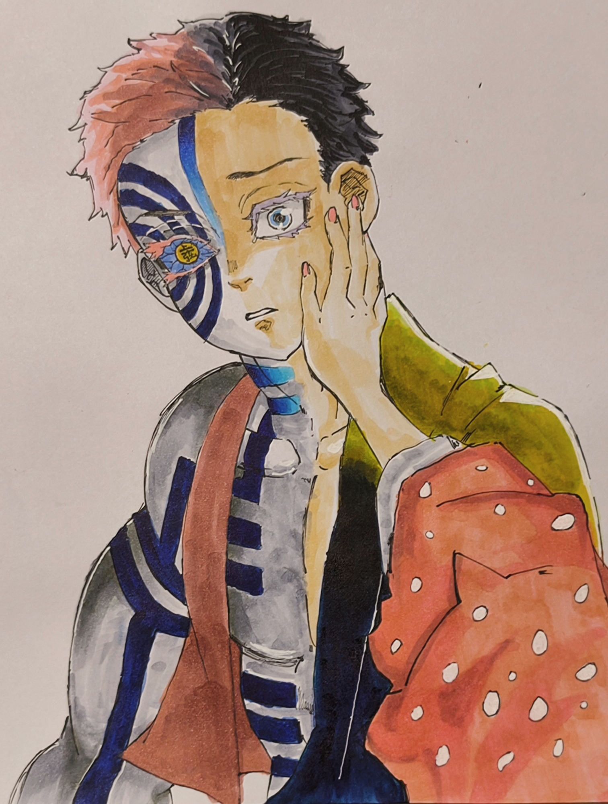
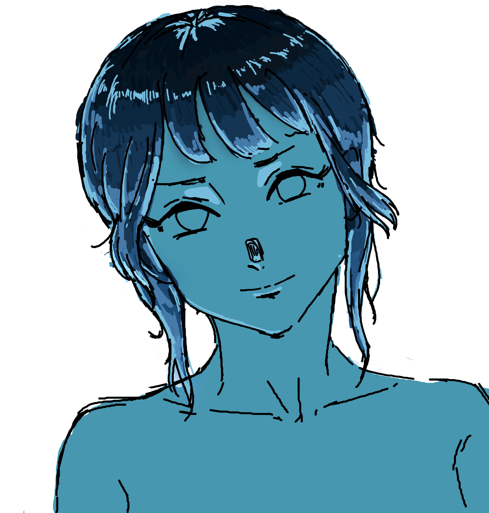
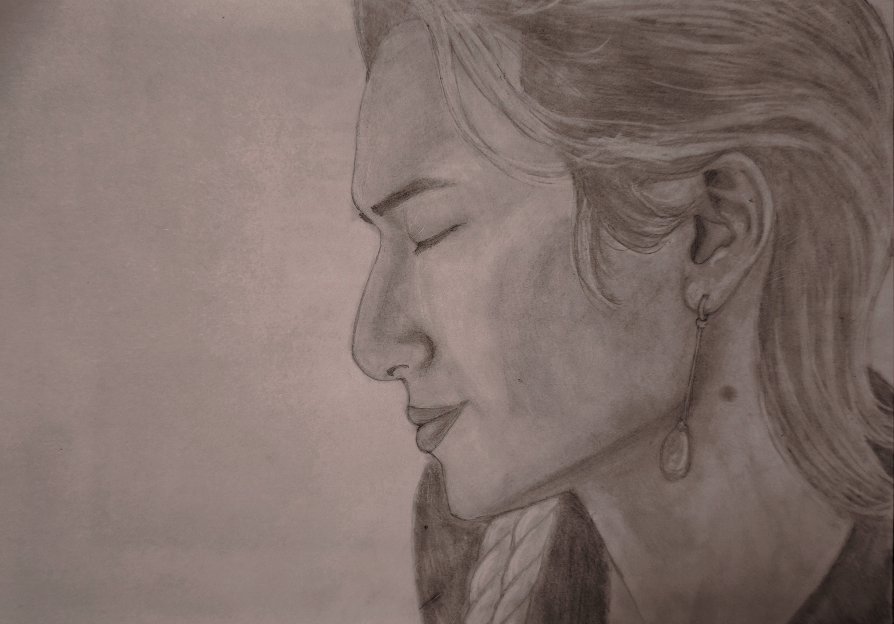

ABOUT ME
我目前就讀於國立高雄科技大學資訊工程系
專注於程式設計及軟硬體應用與開發
除了專研工程領域之外，我同時也投入於插畫創作
在高職時期我曾參與過多項科技競賽與創新發明展
除了獲獎外，競賽中更是賦予了我寶貴的實作視野
因此我致力將其經驗融入實務能力並與現代藝術交織
於每一行程式與每一筆觸之間，在效能與美感兼具下構出最佳的數位體驗
SKILLS/Currently Learning
Tech
Art
PORTFOLIO







THE MILESTONES
高雄市2023Maker創意發明競賽
市區賽
第二、三名、優等、佳作四獎
作為生涯首次競賽，初次發表所感到的緊張與壓力讓我深刻體會到比賽的挑戰難度，成績的不理想也情有可原，粗糙的呈現手法 、生疏的介紹詞，皆誠實的反映出了最終名次，但也因這次的失利讓我領悟到自身問題所在，作品過於粗糙、程式架構鬆散不完整，這些經驗也為我日後的比賽奠定了基礎。 由於得了二、三名次，也因此取得IEYI選拔賽複賽資格。
2024IEYI世界青少年發明展
臺灣選拔賽
金、銀、銅牌三獎
有了前車之鑑後，這次在軟硬體整合的過程有了更縝密的處理，同時在發表與呈現手法的部分也有所進步，最終也不負眾望的斬獲了金銀銅三獎，成功取得代表臺灣隊的資格並進軍國際賽。
全國高級中等職業學校專題競賽
全國賽
第二名
在備戰IEYI國際賽的同時，也卯足全力投入全國專題競賽，結合了以往經驗，針對了整個系統架構進行重塑優化，並將物聯網技術整合進作品中，經過反覆測試與優化，不僅在技術上有更深的造詣，更是取得全國決賽第二名的肯定。
2024 IEYI World Contest
世界賽
佳作
站上國際舞台，與來自各國的創客交流，這不僅是一場單純的比賽，更是一場跨越國界的技術對話。礙於英文能力不足，在面對國際評審時的理念傳達仍有很大的進步空間，導致最終名次止步於佳作，但也藉由這場賽事拓展了我的國際視野。
2025IEYI世界青少年發明展
臺灣選拔賽
銀牌獎
有了前幾次競賽積累的技術經驗後，這次與隊友挑戰將研發重心轉向電腦視覺領域，運用OpenCV實作影像辨識，開發疲勞駕駛檢測系統，最終以銀牌作為結尾。
114學年度 全國技藝教育績優人員
這不僅是一個獎項，對我來說是至高無上的殊榮，
更是對過去多年在資訊與實作技藝領域持續深耕的最高肯定。
也感謝每一位並肩奮鬥的隊友，以及主任與學長姊的細心栽培與教導
最終，以此為我的高職比賽生涯的畫下句號。
CONTACT
Email: qws2288@gmail.com
© 2026 Daolilaxi. All Rights Reserved.